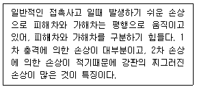
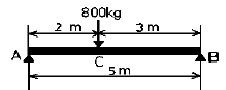
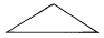
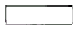
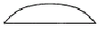
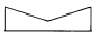

자동차차체수리기능사 (2001-10-14 기출문제)
1과목: 자동차공학
1. 전기아크 용접기의 장점이 아닌 것은?
- 가동부분이 적기 때문에 고장 발생률이 낮다.
- 높은 전력효과를 얻을 수 있다.
- 피복 용접봉만을 사용해야 한다.
- 이동과 운반이 용이하다.
(정답률: 82%)

2. 워밍업 시간을 단축시키기 위한 장치는?
- 후연소 억제밸브(anti after burn valve)
- 연료차단 솔레노이드 밸브
- 대시포트(dash pot)
- 패스트아이들 기구
(정답률: 64%)
3. 차체 손상 진단시 다음 보기와 같은 손상의 형태를 무엇이라 하는가?

- 사이드 데미지 또는 브로드 사이드 데미지
- 사이드 스위핑
- 리어 엔드 데미지
- 롤 오버
(정답률: 70%)
4. 지주가 4개가 있고 지주와 수리차 사이에 큰프레임을 고정시켜 수리차를 올려 놓을 수 있는 정반이 있으며 여러 방향으로 동시에 수리차를 잡아 당길 수 있는 프레임 수정기는?
- 이동식 프레임 수정기
- 고정식 프레임 수정기
- 바닥식 묻힘 베이스프레임 수정기
- 바닥식 간이형 프레임 수정기
(정답률: 70%)
5. 기관의 회전속도가 3600rpm이다. 연소지연 시간이 1/600초라면 연소 지연기간 동안에 크랭크축의 회전각도는 몇도인가?
- 9°
- 18°
- 36°
- 60°
(정답률: 48%)
6. 판금가공용 재료의 구비조건이 될수 없는 것은?
- 전연성이 풍부할것
- 탄성이 풍부할것
- 항복점이 낮을것
- 소성이 풍부할것
(정답률: 54%)
7. 안전작업에 관한 사항 중 틀린 것은?
- 해머 작업전에 반드시 주위를 살핀다.
- 숫돌작업은 정면을 피해서 연마한다.
- 사다리의 설치각도는 75°이내로 하고 미끄러 지지 않게 한다.
- 긴 물건을 운반할 때 뒤쪽을 위로 올리고 운반한다.
(정답률: 73%)
8. 정속 주행장치의 구성부품과 관계 없는 것은?
- 차량속도 센서
- 크루즈 콘트롤 스위치
- 휠속도 센서
- 해제 스위치
(정답률: 48%)
9. 상도도료(top coat)로써 선영성, 광택, 내후성에 대하여 래커로써는 충분하지 않기 때문에 만들어진 상도도료는?
- 아크릴 에나멜
- 레탄 PG-80
- 메라코트
- 아크릭 #1000
(정답률: 46%)
10. 전기용접 작업에 대한 안전사항 중 옳지 않은 것은?
- 어스선은 큰 것을 사용하고 접촉이 잘되게 붙인다.
- 용접봉 코드는 되도록 짧게 하여야 하며 여기에 맞게 용접기를 놓는다.
- 코드의 피복이 찢어졌으면 곧 수리하며 접속부분은 절연물을 감는다.
- 차광 안경을 사용하지 않고 작업한다.
(정답률: 88%)
11. EGR 밸브를 설치함으로서 개선할 수 있는 유해 배기가스는?
- CO
- HC
- NOx
- CO2
(정답률: 83%)
12. 디젤기관의 연소실형식 중 보조 가열장치가 없을때 기동이 가장 잘 되는 형식은?
- 직접분사실식
- 예연소실식
- 와류실식
- 공기실식
(정답률: 70%)
13. 다음 중 지촉 건조된 상태를 가장 잘 표현한 것은?
- 도막을 손가락 끝으로 약간의 압력으로 눌렀을 때 지문이 남지 않는 상태
- 엄지를 도막 위에 눌러 회전하여 가장 센 압력을 주었을 때, 스친 흠이 없는 상태
- 도막을 손가락으로 가볍게 눌렀을 때 점착은 있으나 도료가 손가락에 묻지 않는 상태
- 손톱으로 도막을 벗기기가 곤란하고 칼로 자르더라도 충분히 저항을 나타내는 상태
(정답률: 75%)
14. 점화장치에서 1차 전류를 차단하는 이유는?
- 상호유도 작용을 통한 2차 전압 발생을 위해
- 위험 요소를 제거하기 위해
- 점화코일의 과열방지를 위해
- 안전한 저전압 발생을 위해
(정답률: 75%)
15. 해머 작업시 불안전한 것은 어느 것인가?
- 해머의 타격면이 찌그러진 것을 사용치 말 것
- 타격할 때 처음은 큰 타격을 가하고 점차 적은 타격을 가할 것
- 공동 작업시 주위를 살피면서 공작물의 위치를 주시할 것
- 장갑을 끼고 작업하지 말아야 하며 자루가 빠지지 않게 할 것
(정답률: 78%)
16. 제1각법으로 도면을 그릴 때 정면도를 기준으로 하면 다음과 같은 위치에 그리게 된다. 옳은 것은?
- 평면도는 정면도 위에
- 우측면도는 정면도 오른쪽에
- 좌측면도는 정면도 왼쪽에
- 평면도는 정면도 아래에
(정답률: 45%)
17. SLA식의 위 콘트롤 암의 길이는?
- 아래 콘트롤 암보다 길다.
- 아래 콘트롤 암과 같다.
- 차에 따라 다르다.
- 아래 콘트롤 암보다 짧다.
(정답률: 55%)
18. 자동차 차체수리에 사용되는 용접에서 일반적으로 쓰는 용접의 방법이 아닌 것은?
- 불활성 용접
- 전기 아크 용접
- 전기 저항 스포트 용접
- 가스 용접
(정답률: 70%)
19. Ao 제도용지의 크기는 어느 것인가?
- 1030 ×1456
- 1030 ×1189
- 841 ×1456
- 841 ×1189
(정답률: 44%)
20. 다음 중 광센서가 아닌 것은?
- 포토 다이오드
- 포토 트랜지스트
- 이미지 센서
- 노크 센서
(정답률: 80%)
2과목: 자동차차체정비
21. 디젤기관 연료분사 장치의 분사 압력은 어디서 조정하는가?
- 노즐 조정 스크류
- 연료 여과기
- 분사 펌프의 플런저
- 분사 펌프의 딜리버리 밸브
(정답률: 47%)
22. 그림과 같은 양단 지지보에서 최대굽힘 모멘트(Mmax)는 몇 kg∙m 인가?

- 520
- 780
- 960
- 1020
(정답률: 52%)
23. 다음 도료의 건조방법에 속하지 않는 것은 어느 것인가?
- 휘발건조
- 중합건조
- 압축건조
- 산화건조
(정답률: 73%)
24. 12V, 100AH 배터리를 5A로 방전하면 몇 시간을 사용할 수 있는가?
- 1.6시간
- 10시간
- 20시간
- 24시간
(정답률: 60%)
25. 차량의 주행저항에서 구름 저항이 발생하는 원인으로 틀린 것은?
- 노면의 조건에 의한 것
- 차체의 형상에 의한 것
- 타이어 접지부의 변형에 의한 것
- 타이어의 미끄러짐에 의한 것
(정답률: 60%)
26. 판넬 중 용접이음 방식으로 결합된 판넬은?
- 엔진후드
- 앞펜더
- 뒤펜더
- 트렁크 리드
(정답률: 49%)
27. 트를 풀리에 걸 때는 어떤 상태에서 걸어야 하는가?
- 회전을 중지 시킨다.
- 저속으로 회전 시킨다.
- 중속으로 회전 시킨다.
- 고속으로 회전 시킨다.
(정답률: 82%)
28. 기관의 크랭크축 분해시 주의사항이다. 적합하지 않는 사항은?
- 축받이 캡을 떼었다 결합시에는 제자리 방향으로 끼워야 한다.
- 뒤축받이 캡에는 오일시일이 있으므로 주의를 필요한다
- 스러스트 판이 있을 때에는 변형이나 손상이 없도록한다.
- 분해시에는 반드시 규정 토크렌치를 사용해야 한다.
(정답률: 65%)
29. 소화기 이외에 소화 재료로서 상비하는데 적당한 것은?
- 흙
- 시멘트
- 석회
- 모래
(정답률: 90%)
30. 차동장치에서 액슬축과 직접 접촉되어 있는 것은?
- 사이드 기어
- 웜 기어
- 피니언 기어
- 링 기어
(정답률: 45%)
31. 두께 12mm, 길이 60cm, 고정단의 폭 40cm의 3각판 스프링의 처짐을 2cm까지 허용한다면 가할 수 있는 최대 하중은몇 kgf 인가? (단, E=106 ×2.1kgf/cm2)
- 120
- 224
- 321
- 425
(정답률: 63%)
32. 균일 분포하중을 받고 있는 양단지지 보의 굽힘 모멘트선도는 어느 것인가?




(정답률: 73%)
33. 소성가공에서 냉간가공이 열간가공보다 좋은 점은?
- 가공하기 쉽다.
- 안전율이 증가한다.
- 유동성이 좋아진다.
- 가공면이 아름답고 정밀하다.
(정답률: 63%)
34. 엔진오일 점검시 틀리는 것은?
- 계절 및 기관에 알맞은 오일을 사용한다.
- 기관을 수평상태에서 한다.
- 오일량을 점검할 때는 시동이 걸린상태에서 한다.
- 오일은 정기적으로 점검, 교환한다.
(정답률: 84%)
35. 디젤기관 와류실식의 단점에 해당되지 않는 것은?
- 실린더 헤드의 구조가 복잡하다.
- 직접 분사식에 비해 연료소비율이 높다.
- 저속시 디젤노크가 일어나기 쉽다.
- 직접 분사식에 비해 연료의 착화성에 민감하다.
(정답률: 45%)
36. 퍼티를 설명한 것 중에서 틀린 것은?
- 퍼티를 많이 칠한 장소일수록 경화 속도가 빠르다
- 퍼티 주걱의 재료는 나무, 고무, 플라스틱을 사용
- 퍼티가 일정하게 희석되도록 반죽할 때에는 공기가 들어가지 않도록 주의한다.
- 퍼티는 많은 양을 혼합하여 두껍게 한번에 칠하는 것이 원칙이다.
(정답률: 83%)
37. 다음 그루버심을 할 때 두께 1.0mm 판재에 심나비 10mm하려면 심 여유치수는 얼마인가?
- 10mm
- 20mm
- 35mm
- 45mm
(정답률: 32%)
38. O2센서에서 피드백 제어가 해제(작용하지 않음)되는 조건을 설명한 것이다. 틀린 것은?
- 시동 후 증량 작동시
- 촉매 과열시
- 배기온도 경고등 점등시
- 기관 정격 회전시
(정답률: 56%)
39. 기계작업시 일반적인 안전에 대한 설명 중 잘못된 것은?
- 기계는 사용전에 점검한다.
- 기계는 사용법을 확실히 사전에 숙지한다.
- 경우에 따라서는 취급자 이외도 사용한다.
- 칩(Chip)이나 절삭된 물품에 손을 대지 않는다.
(정답률: 95%)
40. 다음 중 차체수리의 3요소에 해당되지 않는것은?
- 견인
- 고정
- 계측
- 분산
(정답률: 64%)
3과목: 안전관리
41. 플라스틱과 같은 비금속 재료는 일반적으로 내열온도가 낮은데, 열변형 개시온도가 어느 범위 것이 가장 많은가?
- 30 - 60℃
- 40 - 100℃
- 50 - 110℃
- 60 - 120℃
(정답률: 52%)
42. 저항 용접인 점용접(spot welding)에서 행하여 지지 않는 시간은 다음 중 어느 것인가?
- 스퀴즈 타임(squeeze time)
- 스페어 타임(spare time)
- 웰드 타임(weld time)
- 호울드 타임(hold time)
(정답률: 57%)
43. 힘의 3요소에 해당하지 않는 것은?
- 방향
- 속도
- 크기
- 작용점
(정답률: 61%)
44. 스케치도는 보통 어떤 도법에 의하여 그리는가?
- 회화법
- 제1각법
- 제3각법
- 투시도법
(정답률: 74%)
45. 클러치가 미끄러지면 나타나는 현상이 아닌것은?
- 연료 소비량이 증대된다.
- 기관이 과냉된다.
- 주행 중 가속 페달을 밟아도 차가 가속되지 않는다.
- 등판 성능이 저하된다.
(정답률: 83%)
46. 비중에 비하여 강도가 크므로 무게를 중요시 하는 항공기나 자동차 재료로 사용되는 것은?
- y합금
- 알코아 19s
- 두랄루민
- 알코아 14s
(정답률: 87%)
47. 안전율이란 무엇을 뜻하는가?
- 재료의 인장강도와 허용응력과의 비율을 말한다.
- 재료의 인장강도와 압축응력과의 비율을 말한다.
- 재료의 전단응력과 인장응력과의 비율을 말한다.
- 재료의 전단응력과 압축응력과의 비율을 말한다.
(정답률: 68%)
48. 다음 철광석 중 철분이 가장 많은 것은 어느 것인가?
- 자철광
- 적철광
- 갈철광
- 능철광
(정답률: 78%)
49. 비철금속에 들지 않는 것은?
- 황동판
- 청동주물
- 알루미늄판
- 합금강
(정답률: 59%)
50. 축전지의 전압이 12V이고 권선비가 1:40인 경우 1차 유도전압이 350V이면 2차유도전압은얼마인가?
- 11000V
- 12000V
- 13000V
- 14000V
(정답률: 53%)
51. 전륜구동식(FF)의 특징이 아닌 것은?
- 엔진이 횡으로 설치되어 실내공간이 넓다.
- 후륜구동에 비해 경량화 가능하다.
- 직진성이 양호하다.
- 전축과 후축에 중량이 골고루 배분되어 승차감이 좋다.
(정답률: 86%)
52. 이 들어가지 않는 좁은 공간에 사용되는 수공구는?
- 해머
- 돌리
- 스푼
- 샌더
(정답률: 76%)
53. 흡입공기온도를 계측하는 센서는?
- BPS
- ATS
- TPS
- WTS
(정답률: 67%)
54. 판금제품을 보강하거나 장식을 목적으로, 옆벽의 일부를 볼록하게 나오게 하거나 오목하게 들어 가도록 띠를 만드는 가공방법은?
- 비딩
- 벌징
- 플랜징
- 엠보싱
(정답률: 72%)
55. 자동차 차체에 충격력을 받았을 경우 파손및 변형되기 쉬운곳 즉 응력집중이 많은 곳을 나열하였다. 이에 속하지 않는 곳은?
- 코너부
- 패널 평면부
- 두께가 변화된 곳
- 구멍 뚫린 주변
(정답률: 63%)
56. 다음 파워 툴의 설명 중 맞는 것은?
- 에어치즐은 직선과 곡선이 자유롭지 못하다.
- 동력가위는 절단부 주위에 다소 뒤틀림이 생긴다.
- 동력용 톱은 톱날 수명이 길다.
- 에어치즐은 정밀한 작업에 쓰인다.
(정답률: 42%)
57. 잭으로 자동차를 들어 올려 작업을 할때 유의할 사항 중 틀린 것은?
- 앞, 뒤를 동시에 들어 올린다.
- 한곳을 스탠드로 지지한 다음 들어 올린다.
- 스탠드 대신 잭(JACK)을 사용하지 않는다.
- 차밑 작업시는 보안경을 반드시 사용한다.
(정답률: 55%)
58. 조정 렌치 사용상의 안전 및 주의점으로 가장 타당치 못한 것은?
- 렌치를 잡아당기며 작업한다.
- 조정 조우에 잡아당기는 힘이 가해져서는 안된다.
- 힘껏 조이기 위하여 렌치에 파이프등의 연장대를 끼우고 사용해야 한다.
- 렌치는 볼트, 너트를 풀거나 조일 때 볼트 머리나 너트에 꼭 끼워져야 한다.
(정답률: 84%)
59. 가솔린의 안티노킹성을 표시하는 것은?
- 세탄가
- 헵탄가
- 옥탄가
- 프로판가
(정답률: 85%)
60. 철강은 성분적으로 보아서 그 속에 함유된 무엇의 양에따라 그 철강의 성질이 좌우되는가?
- 순철
- 선철
- 탄소
- 수소
(정답률: 84%)